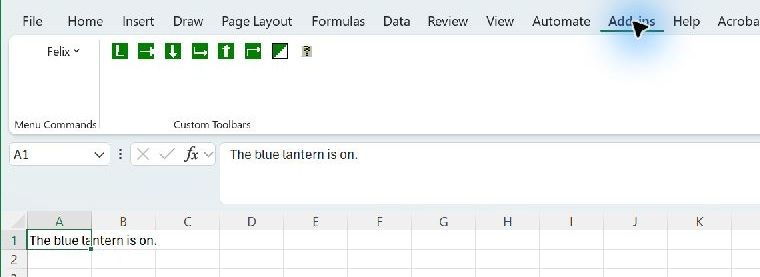

8. Using Felix from Excel¶
Install the optional Excel add-in as described in Choosing Components. In Excel, open the ribbon’s Add-ins tab to find the Felix menu and toolbar.

The Felix menu and toolbar on Excel’s Add-ins tab
The Felix interface includes functionality to assist in translating Excel files. Excel is a good format for storing glossaries and memories, and the interface also includes functions to export Excel glossaries/memories to Felix (Felix can also export memories and glossaries as Excel files).
Sub-sections